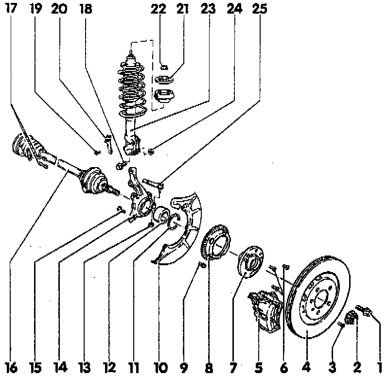

Plus Suspension
Wheel Bearing, Suspension Strut and Drive Axle, Removing and Installing(Plus Suspension)

2 Self-Locking Nut (12-point)
- Revised wheel hub, Application and ID
- Tighten to: 90 Nm (66 ft lb) plus additional 1/8 turn (45°)
- Loosening/tightening, refer to Transmission and Drivetrain
- Paint and/or corrosion on threads of outer constant velocity joint must be removed before nut is installed.